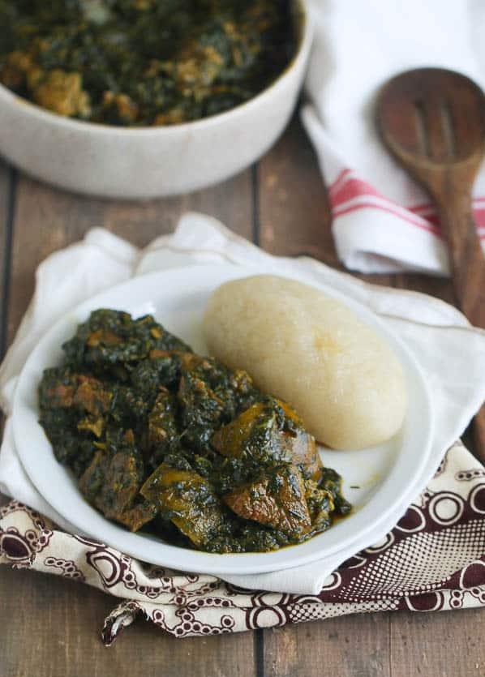
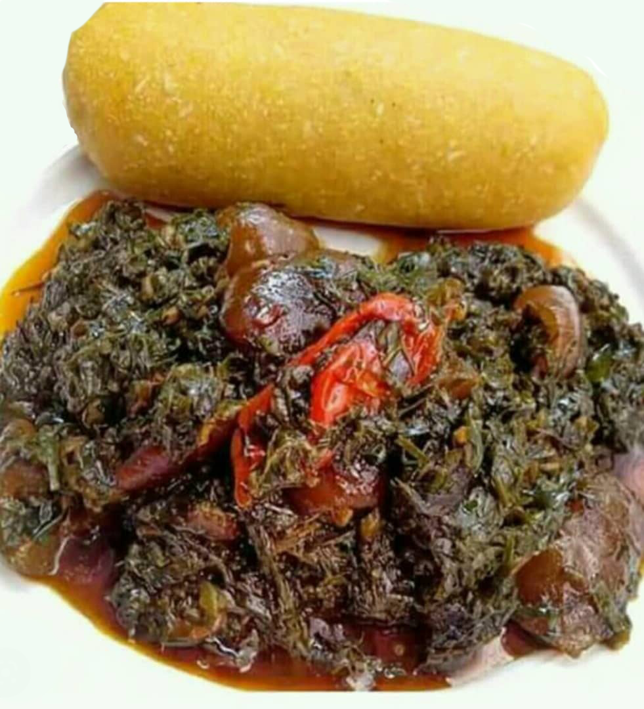

Ero


Description
Ero is by large one of the most delectable cuisines in Africa, widely celebrated for its irresistible taste and
enticing aroma, which fills the senses with the warmth of freshly baked spices.
Ingredients
- 4-5 pounds of meat or beef, tripe, cow skin, smoked turkey, or any other choice combination.
- 1½ pounds of dried fish
- ¼ chopped onion
- 2-4 cups of palm oil
- ½ cup of ground crayfish
- 5-6 cups of dried chopped ukazi
- 2 pounds of frozen spinach
- 2 Maggi or bouillon powder cubes
- Salt and pepper to taste
Steps
- Cut the beef into small pieces and season with salt, Maggi, and onions, and cook until tender.
Do the same for the cow skin, which requires a longer cooking time due to its toughness.
Use minimal water while cooking the meat, as eru doesn't need much moisture. However, ensure
you have at least 2-3 cups of beef stock for the dish.
- While the meat cooks, soak the dried okazi (ero) leaves in hot water for 10-15 minutes to
soften them. Afterward, rinse and drain the leaves.
- In a large stock pot, combine the assorted meats—beef, cow skin, tripe, and dried fish or
turkey—with at least 2 cups of stock. Bring the mixture to a boil and let it simmer for 5 minutes.
- Next, drain the thawed spinach and add it to the pot with the assorted meats and fish.
Incorporate crayfish and two tablespoons of bouillon or Maggi. Stir and cook over medium heat
for about 10 minutes.
- Add the shredded okazi (ero) leaves and red oil. Mix everything thoroughly to ensure all
ingredients
are well combined. Let it simmer for another 10 minutes, adding stock or water if
necessary.
The delightful aroma will signal that it's time to serve.
- Adjust the seasoning with salt( but be cautious with it as ero doesn't appreciate too much salt)
and additional Maggi to taste, as I typically season my dishes progressively.
Home